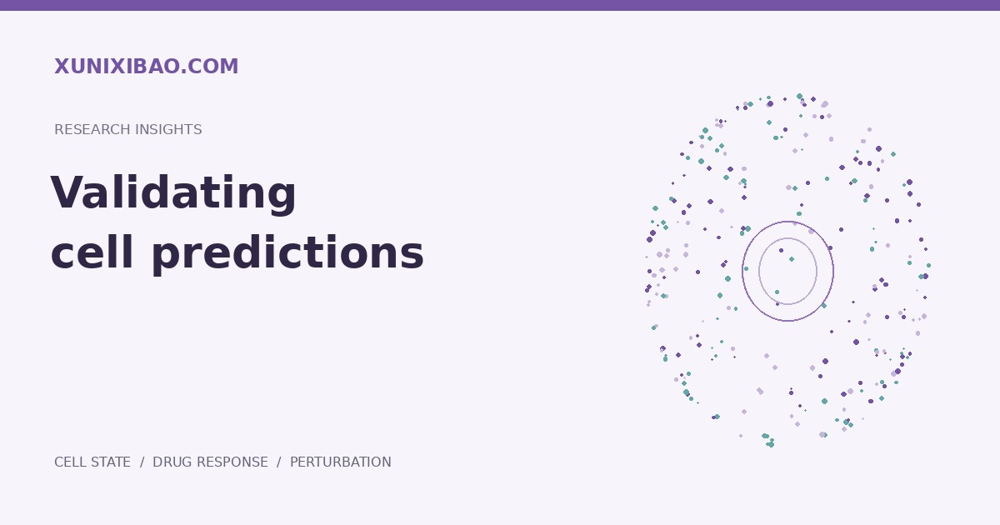

核心摘要
细胞预测模型的验证应与实际使用场景一致，包含合理的数据隔离、简单基线比较、多维读出和独立验证，并明确不适用的条件。
先明确泛化问题
“新细胞上的表现”与“新扰动上的表现”不是同一个问题。划分测试集前，应说明预期使用场景：新供体、新细胞类型、新化合物，或多个变化同时出现。
把数据泄漏挡在评估之前
若相同样本、供体或高度相似的实验条件同时进入训练集与测试集，模型可能获得过于乐观的评分。划分策略应与任务一致，预处理和参数选择也应避免利用测试集信息。
一定要比较简单基线
复杂模型需要与对照均值、条件均值或其他合适的简单方法比较。只有证明新增复杂度带来了稳定价值，才有理由在下一步研究中依赖该模型。
指标需要与生物学问题对应
总体表达相似度、差异基因恢复、通路方向和表型读出回答的问题各不相同。对于以干预效果为目标的任务，应避免仅用整体相似度掩盖真正响应信号的不足。
外部验证与局限同样重要
报告应保留数据来源、模型版本、条件范围与失败情形。跨实验室、跨批次或新背景验证可以检验模型的稳健性；无法覆盖的情形应明确说明，不把不确定结果包装为确定结论。
延伸阅读
Arc Institute · Virtual Cell Initiative ↗
Tahoe · 数据与研究路径 ↗
查看本站研究参考
来源与证据
不确定性应结合生物学样本或重复评估，并报告不同划分与细胞背景下的波动。同一样本中的大量细胞不能直接替代独立生物学重复；差异不显著也不等于已证明等效。
在该研究测试的数据与任务中，所评估的深度学习模型未超过简单基线；这不等于所有模型在所有任务上无效。 Nature Methods · Perturbation prediction and simple baselines ↗
跨数据集、扰动与细胞背景的评测说明，模型选择需要对应具体泛化任务。 Nature Methods · Generalizable perturbation prediction ↗